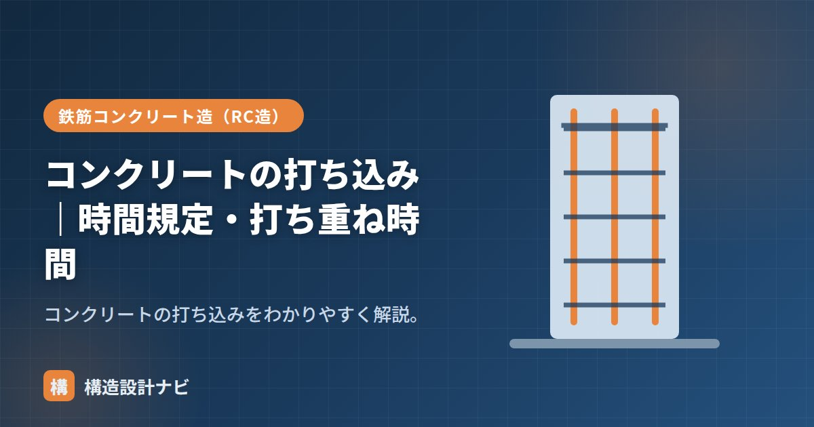

コンクリートの打ち込み｜時間規定・打ち重ね時間

打ち込み（打設）とは、レディーミクストコンクリート工場から運ばれた生コンクリートを型枠の中に流し込み、締め固めて所定の形に仕上げていく作業のことです。英語ではプレーシング（placing）と呼ばれます。単に流し込むだけの作業に見えますが、材料分離や品質低下を防ぐために、練混ぜからの経過時間、打ち込む速度、順序など、細かなルールが定められています。これらを守らないと、強度不足やコールドジョイント、豆板（じゃんか）などの欠陥につながります。
- 打ち込みは練混ぜから終了まで外気温25℃以上で90分・未満で120分以内。
- 打ち重ね時間は外気温25℃以上で120分・未満で150分以内が目安。
- 自由落下高さを抑え、横流しをせず、締固めで一体化するのが基本。
時間規定
練混ぜから打込み終了までは、外気温25℃以上で90分・未満で120分以内です。さらに、層を重ねて打つ際の「打ち重ね時間」にも制限があります。これは、運搬中や待機中にセメントの水和反応が進み、コンクリートの流動性が失われて締固めが難しくなることを防ぐための規定です。工事現場が生コン工場から遠い場合や、渋滞・天候などで運搬が遅れる場合は、この時間内に収まるよう事前に段取りを組んでおく必要があります。
打ち重ね時間（許容間隔）
先に打った層の上に次の層を打つまでの時間（許容打重ね時間間隔）は、おおむね次が目安です。
- 外気温25℃以上：120分以内
- 外気温25℃未満：150分以内
これを超えると下層が固まり始め、コールドジョイントになります。
柱や壁のように背が高い部材は、1回で打ち上げず何層かに分けて打つのが一般的です。各層の厚さは、締固めに使う棒形振動機（バイブレーター）が下層まで届く範囲（一般に40〜50cm程度）を目安に設定し、上下の層が一体化するよう管理します。
打込みの順序と方法
- 打込み順序：一方向に・層状に・連続して打つ。低い位置から高い位置へ、あるいは計画した経路に沿って打ち進める。
- スラブ・梁：梁を先行して打ち、その後スラブへ連続させることが多い。
- 打ち込みながら締固めを行い、下層に振動機を差し込んで一体化する。
注意点
- 自由落下高さを抑える：高い所から落とすと材料分離する（1.5m以下程度を目安）。シュートや配管の先端をできるだけ打込み面に近づける。
- 横流ししない：バイブレータで流すと分離する。打設位置の近くに下ろす。
- 過度な締固めを避ける：振動機を長時間当てすぎるとブリーディングが増え、材料分離の原因になる。
- 鉄筋・型枠のずれに注意：打込み中に鉄筋の位置や型枠が動いていないか確認する。
Q. 打ち込みと打設は同じ意味ですか？
現場では「打設」という言葉もよく使われますが、意味はほぼ同じで、型枠にコンクリートを流し込み締め固める作業全体を指します。JASS5などの規準では「打込み」という表記が使われます。
打設に立ち会うとき最初に気にするのは、生コン車の到着間隔です。渋滞などで運搬が遅れて打ち重ね時間の上限に近づいていないか、練混ぜからの経過時間を伝票で都度確認するようにしています。
材料分離を防ぐ打込み方（図解）
打込みでもっとも避けたいのが材料分離です。高い位置から落とす、横に流す、といった行為が原因になります。
打込みの基本ルール
| 項目 | ルール | 理由 |
|---|---|---|
| 落下高さ | できるだけ低く（1.5m以下を目安） | 高いと骨材が先に落ちて分離する |
| 横流し | 禁止。バイブレーターで流さない | ペーストだけが先に流れて分離する |
| 1層の厚さ | 40〜50cm以下 | バイブレーターが届く範囲にする |
| 打込み順序 | 柱・壁を先に、梁・スラブは後 | 柱・壁の沈下が収まってから梁を打つ |
| 打継ぎ位置 | せん断力の小さい位置（梁の中央付近など） | 打継ぎ面は弱点になるため |
| 時間 | 25℃以上90分・未満120分以内 | 凝結が進むと締固めできない |
柱や壁を打った直後は、コンクリートが自重で数mm〜十数mm沈下します（沈下量は打込み高さに比例）。柱と梁を同時に打つと、柱の沈下によって梁との境目にひび割れが生じます。そのため、柱・壁を先に打ち、沈下が落ち着いてから梁・スラブを打つのが原則です。この待ち時間を「沈み待ち」と呼びます。
よくある質問
Q1. 打継ぎはどこに設けるのがよいですか？
せん断力の小さい位置に設けます。梁やスラブでは中央付近、柱・壁では梁の下端やスラブの上端が一般的です。せん断力が大きい位置に打継ぎを設けると、その面がずれる方向の力を受けて弱点になります。また、打継ぎ面は打込み方向に対して直角（鉛直部材なら水平、水平部材なら鉛直）にするのが原則です。
Q2. 打込み速度が速すぎるとどうなりますか？
型枠にかかる側圧が大きくなり、型枠の変形・破損につながります。側圧は打込み速度に比例して増大するためです。また、締固めが追いつかず空隙が残ったり、下層の沈下が収まる前に上層を打つことでひび割れが生じたりします。型枠の設計時に想定した打込み速度を守ることが重要です。
Q3. ポンプ圧送で品質は変わりますか？
配管内での圧力によって空気量が減少することがあります。特に長距離・高所への圧送では、荷卸し地点と打込み地点で空気量に差が出るため、必要に応じて打込み地点での確認を行います。また、圧送性を確保するためにスランプを大きくしたくなりますが、加水は厳禁で、必要なら配合段階で高性能AE減水材により流動性を確保します。
まとめ
- 打ち込みは型枠に生コンを流し込む作業。運搬・打重ねの時間制限がある。
- 打ち重ねは25℃以上120分・未満150分以内が目安。超えるとコールドジョイント。
- 自由落下を抑え、横流しせず、締固めで一体化する。
- 打込み順序をあらかじめ計画し、一方向・連続して打ち進めることが品質確保につながる。